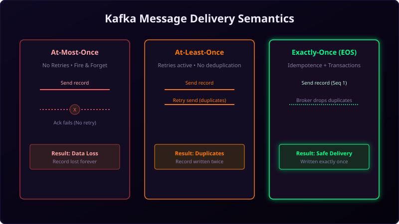

When sending data over a network, things go wrong. Servers crash, sockets drop, and routers drop packets. In a distributed message system, you must configure how your applications handle these glitches. This is defined by **Delivery Semantics**.
Kafka supports three delivery options, each suited for different business needs. Let's compare their behaviors, configurations, and risks.

Imagine mailing a document to a business partner:
- At-Most-Once: You drop the document in a standard mailbox. If it gets lost, it's gone. You don't try again. The partner gets it either 0 or 1 times.
- At-Least-Once: You mail the document. If you don't hear back within a week, you mail another copy. You keep mailing copies until they confirm receipt. The partner gets it 1 or more times (duplicate packages possible).
- Exactly-Once: You hire a secure carrier who locks the document in a case, verifies the recipient's fingerprint, and logs it. The partner gets the document exactly 1 time.
Comparison of the Three Semantics
1. At-Most-Once
Messages are written and read, but never retried. If a write fails or a consumer crashes before processing, the data is lost.
- Producer Settings:
acks=0,retries=0 - Consumer Settings:
enable.auto.commit=true(commits offset immediately after polling) - Data Loss Risk: High.
2. At-Least-Once (Default)
Messages are retried on write failures. If an acknowledgment fails, the producer resends the message, which can result in duplicates on the broker.
- Producer Settings:
acks=all,retries > 0,enable.idempotence=false - Consumer Settings:
enable.auto.commit=false(commits offsets manually *after* processing completes) - Data Loss Risk: Zero. However, duplicates are possible.
3. Exactly-Once Semantics (EOS)
Messages are written and read exactly once. No records are lost, and no duplicates are introduced, even during server crashes.
- Producer Settings:
enable.idempotence=true,transactional.idconfigured - Consumer Settings:
isolation.level=read_committed - Complexity: Highest, with slight network overhead.
Choosing the Right Option
Most business applications use **At-Least-Once** because preventing data loss is critical. Duplicates are then handled by writing idempotent consumer logic (e.g., checking database records before inserting). For payment gateways and ledger systems, invest the effort to configure true **Exactly-Once Semantics**.
Conclusion
Match your delivery guarantees to your business goals. For simple logs, choose At-Most-Once to save network resources. For database updates, choose At-Least-Once, and use Exactly-Once transactions when database consistency is paramount.